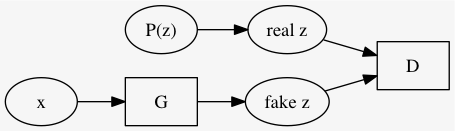

GAN を用いた確率的自己符号化器
目的関数は
\[\min_G \max_D \left[ \mathbb{E}_{x \sim \text{real}} \log D(x) + \mathbb{E}_{z \sim Pr(z)} (1 - \log D(G(z))) \right]\]GAN と同様に \(G\) 及び \(D\) を構成する

先ほどの GAN の説明と、 \(x\) と \(z\) とが入れ替わってることに註意. 従って目的関数は次のようになる.
\[\min_G \max_D \left[ \mathbb{E}_{z \sim Pr(z)} \log D(z) + \mathbb{E}_{x \sim \text{examples}} (1 - \log D(G(x))) \right]\]以上で学習した
\[G: x \mapsto z\]を自己符号化器として AAE と呼ぶ.
Autoencoders は教師ナシ学習の一種だが、 データ \(x\) にラベルが着いてるのならばそれも有効に使いたい.
論文では MNIST と SVHN を材料に、AAE と普通の自己符号化器をあわせたようなモデルで学習させた.
\((x, y)\) について
手書き文字画像 \(x\) を例に取ると、 \(G\) は \(x\) から何かしら \(\text{fake }z = G(x)\) を生成し、 ラベル \(y\) (例えば one-hot ベクトルとする) と結合したものから Decoder は元の画像 \(x\) を復元しようとする. 書くべき数字はラベルから分かるので、 \(G(x)\) はその他の成分、style と言われる.
style を求める \(G\) にクラス予測も一緒にさせる. つまり、 \((\text{style}, y') = G(x)\) とする. ただしクラス予測は MSE とか取るんじゃなくて、何故か知らんけどここも、 \(P(y|x)\) から取った \(y\) と識別させるようにする. つまり全体として GAN 2つをくっつけた.

だんだんゴツくなってきたな...
\(m\) クラスにクラスタリングしたいとき、 \(y' \in \mathbb{R}^m\) になるように次のようなモデルを使う.

元論文では MNIST を 16 classes (10 ではなく) にクラスタリングした結果を示している (Figure 9).